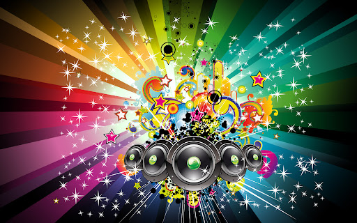
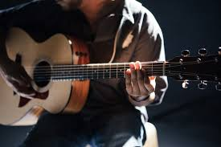

Music is a vital part of different moments of human life. It spreads happiness and joy in a person’s life. Music is the soul of life and gives immense peace to us. In the words of William Shakespeare, “If music is the food of love, play on, Give me excess of it; that surfeiting, The appetite may sicken, and so die.” Thus, Music helps us in connecting with our souls or real self. Music is a pleasant sound which is a combination of melodies and harmony and which soothes you. Music may also refer to the art of composing such pleasant sounds with the help of the various musical instruments. A person who knows music is a Musician.
Music has great qualities of healing a person emotionally and mentally. Music is a form of meditation. While composing or listening music ones tends to forget all his worries, sorrows and pains. But, in order to appreciate good music, we need to cultivate our musical taste. It can be cited that in the Dwapar Yug, the Gopis would get mesmerized with the music that flowed from Lord Krishna’s flute.
CLICK HERE TO LISTENIt has the power to cure diseases such as anxiety, depression, insomnia, etc. The power of Music can be testified by the legends about Tansen of his bringing the rains by singing Raag Megh Malhar and lighting lamps by Raga Deepak. It also helps in improving the concentration and is thus of great help to the students.Music is the essence of life. Everything that has rhythm has music. Our breathing also has a rhythm. Thus, we can say that there is music in every human being or a living creature. Music has the ability to convey all sorts of emotions to people. Music is also a very powerful means to connect with God. We can conclude that Music is the purest form of worship of God and to connect with our soul.
